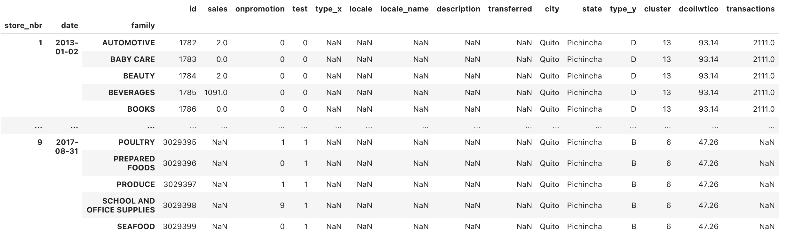

今天看学习资料的时候发现kaggle还有时序相关的ML问题,想起之前看到有公司也有要求时序处理相关经验,这里就从零开始学习一下时序处理相关,可能一篇不太写得完,毕竟是以前没做过的东西,大概会多写一些.
题目是Store Sales - Time Series Forecasting
然后学习的notebook是来自Amisha0528这位朋友的,
数据读取和合并
首先dataset提供的内容包含在多个文件中
1 | train =pd.read_csv("/kaggle/input/store-sales-time-series-forecasting/train.csv") |
数据设计多表合并,以前并没有碰到过此类问题在这里记录一下
1 | train['test'] = 0 |
首先新增test字段做train和test的区分,然后对train和test进行合并方便做表合并,最后选取多列做index 
后续使用pandas的datetime进行处理,这里可以直接单独提取year, month,
day, week等字段作为单独列方便后续处理 1
2
3
4
5
6
7
8
9
10
11
12
13
14
15# date处理
data_ = data.copy().reset_index()
data_['date'] = pd.to_datetime(data_["date"])
data_['day_of_week'] = data_['date'].dt.day_of_week
data_['day_of_year'] = data_['date'].dt.dayofyear
data_['day_of_month'] = data_['date'].dt.day
data_['month'] = data_['date'].dt.month
data_['quarter'] = data_['date'].dt.quarter
data_['year'] = data_['date'].dt.year
train = data_[data_['test'] == 0]
test = data_[data_['test'] == 1]
train.head()
这里可以groupby看一下各种时间的sales数据,可以做一些ploting之类的工作
1 | # groupby对sale求和 |
创建lag和window
这里我个人感觉是关键部分,通过前面提取的date信息,这里我们通过建立date之间的关系并提取作为新的列,这些列会在后续作为feature使用
1 | # shifting data |
shift是创建lag,ewm是选择窗口,表示每个数值由相近的多少个值所决定.
最后数据提取和列的取舍
后续即做train_test_split并且丢弃一些列,这里作者还涉及了一些dummy相关但最后似乎并没有做相应处理
1
2
3
4
5
6
7
8
9
10
11
12
13
14
15
16
17
18
19
20
21
22
23
24
25
26
27
28
29
30
31
32
33
34
35data_['onpromotion'] = data_['onpromotion'].apply(lambda x: x > 0)
sales_lag_columns = list(data_.filter(like="lag").columns)
training_percentage = 0.8
testing_percentage = 0.2
to_dummies = ['day_of_week', 'day_of_month', 'month', 'quarter', 'year', 'store_nbr', 'type_y', 'cluster', 'family', 'onpromotion', 'type_x',
'locale', 'locale_name', 'city', 'state']
X = data_.loc[:, [ 'day_of_week', 'day_of_month', 'month', 'quarter', 'year', 'store_nbr', 'type_y', 'cluster', 'family', 'onpromotion', 'type_x',
'locale', 'locale_name', 'city', 'state', 'test', 'sales', 'id']+ sales_lag_columns]
X[to_dummies] = X[to_dummies].astype('category')
data_train = X[X['test'] == 0]
data_test = X[X['test'] == 1]
n = len(data_train)
training_start = 0
training_end = math.floor(n * training_percentage)
validation_start = training_end
validation_end = n
X_train = data_train.loc[training_start:training_end, :].drop(['test', 'sales', 'id'], axis=1)
y_train = data_train.loc[training_start:training_end, 'sales']
X_val = data_train.loc[validation_start:validation_end, :].drop(['test', 'sales', 'id'], axis=1)
y_val = data_train.loc[validation_start:validation_end, 'sales']
X_test = data_test.loc[:, ].drop(['test', 'sales', 'id'], axis=1)
# filter chars
X_train = X_train.rename(columns = lambda x:re.sub('[^A-Za-z0-9_]+', '', x))
X_val = X_val.rename(columns = lambda x:re.sub('[^A-Za-z0-9_]+', '', x))
X_test = X_test.rename(columns = lambda x:re.sub('[^A-Za-z0-9_]+', '', x))
X_train.head()
train
最后丢进LGBMRegressor, LightGBM, short for light gradient-boosting machine.
1 | hyper_params = {'task': 'train','boosting_type': 'gbdt','objective': 'regression','metric': ['l1','l2'],'learning_rate': 0.1, |
TODO
这次写的主要是数据处理流程以及最后模型的使用,这次先记录所看的第一个notebook,对于这一类以前没遇到的问题还是得多看多练,后续也会再多找几个notebook进行学习和记录.